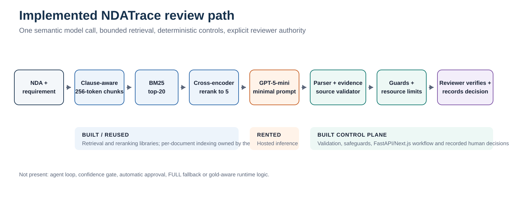
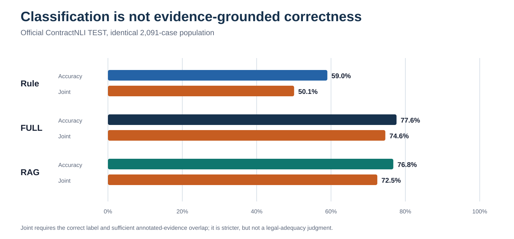
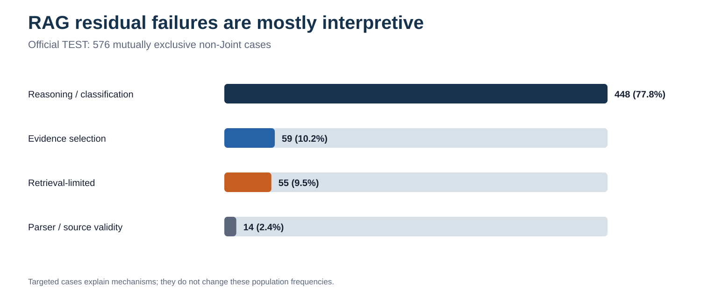
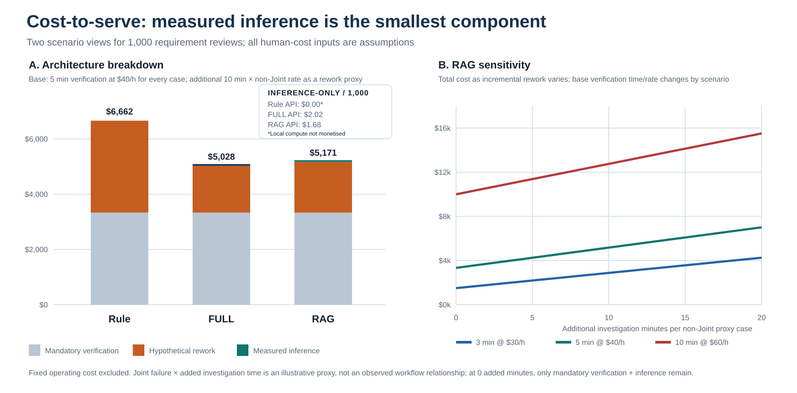

NDATrace: When Less Architecture Produced the Stronger Result
1. The business problem and actual contribution
Tina, an enterprise legal-operations analyst, currently reads a vendor NDA against 17 confidentiality requirements before counsel decides what to do. Keyword search is a weak substitute: the official rule baseline found only 16.8% of contradictions because obligations can be paraphrased, qualified by exceptions or assembled across clauses. NDATrace changes the hand-off, not the legal authority. It proposes a structured label, exposes the quoted clauses and lets Tina record an approval, override or rejection. That demonstrated workflow justifies semantic AI over rules while keeping verification human. I measured classification, evidence and operating signals; I did not measure time saved, legal outcomes or realised productivity.
2. Architecture and build-versus-rent decisions

| Layer | Decision | Implemented choice | Boundary or gap |
|---|---|---|---|
| Compute | Rent / local comparison | OpenRouter inference; Ollama for local experiments | Provider dependency; local energy/compute not monetised |
| Model | Rent | GPT-5-mini, temperature 0 | No fine-tuning; behaviour remains probabilistic |
| Data | Reuse | ContractNLI, CC BY 4.0 | Public, short NDAs are not enterprise validation |
| Retrieval | Build + reuse libraries | Clause chunks, BM25, cross-encoder | Project owns configuration, not pretrained reranker |
| Orchestration | Build | Single bounded call; no agent or confidence gate | No automatic FULL fallback |
| Evaluation | Build | Split discipline, paired tests, Joint evaluator | Gold overlap is an imperfect legal proxy |
| Serving / interface | Build | FastAPI + Next.js + persisted decisions | Replaced the proposed thin Streamlit demo to support review history and a real decision API |
| Governance / observability | Build, incomplete | Source checks, injection flags, rate/concurrency/cost limits, logs | No enterprise identity, access policy or production monitoring |
I placed semantic interpretation inside one rented model call and kept provenance, parsing, resource limits and final authority outside it. This makes failures observable and prevents the model from validating its own claims. The cost is integration complexity and dependence on a hosted model whose reasoning I cannot fully control. Retrieval is also an ownership choice: bounded context is predictable to serve, yet omitting a decisive clause becomes my system's failure. Reusing mature ranking libraries reduced implementation risk, but their pretrained objectives may not reflect legal relevance. A FastAPI/Next.js split replaced the proposed thin Streamlit interface because recorded reviewer decisions and history required a persistent backend rather than a disposable demonstration shell.
3. The complete experimental journey
| Research question | Compared configurations | Important measured finding | Final decision |
|---|---|---|---|
| What is the cheap floor? | Majority and keyword Rule; TEST n=2,091 | Majority: 46.3% accuracy, 0 Joint. Rule: 59.0% accuracy, 50.1% Joint, 16.8% contradiction recall | Retain Rule as a comparator, not the product |
| Oracle: is the ceiling retrieval or reasoning? | Four models with gold evidence; balanced TRAIN n=300 | GPT macro-F1 0.906 / C recall 82%; Qwen 0.638 / 30% | Use GPT-5-mini; reasoning remains a bottleneck even with perfect evidence |
| Do richer prompts help? | Minimal vs definitions vs procedure; Qwen TRAIN n=150; later GPT controls | Qwen minimal led macro-F1 (0.507) and C recall (22%); extra structure worsened C→NM errors. GPT variants did not justify changing the frozen prompt | Freeze the minimal prompt |
| Which retrieval complexity earns its place? | Chunks, BM25/dense/hybrid, reranker, top-K; evidence-bearing TRAIN n=4,371 | Reranking raised recall to 92.2%; post-rerank BM25 and dense differed on 1/4,371 cases | BM25 top-20 → cross-encoder top-5; reject dense index |
| Does more context help? | Top-5 vs top-11; matched TRAIN n=150 | Joint +4 points but p=0.263; input +64%, with recoveries and distractor regressions | Keep top-5; improvement not established |
| Does RAG beat FULL? | Frozen GPT prompt/evaluator; official TEST n=2,091 | FULL Joint 74.6% vs RAG 72.5% (p=0.0047); RAG input −50.4%, API cost −16.8% | FULL is quality reference; RAG is a bounded-context product trade-off |
| Does selective investigation recover errors? | GPT-RAG vs triggered agent; TRAIN n=150, 15 escalations | Zero tool calls; one Joint recovery and one regression; +$0.0218 | Reject tested agent |
| Can observable signals safely route review? | R1-R3 policies; DEV n=138 | Strongest policy reviewed 51.4% yet left 10.4% residual Joint error | No automatic routing; retain only structural flags |
| How robust is the path? | 20 clean/attack pairs; 11 injection pairs | Joint 85%→75%; 4/11 injection patterns succeeded | Add quarantine guard; disclose residual attack risk |
| Targeted evaluation: do known hard mechanisms persist? | Rule/FULL/RAG; curated DEV n=49 | FULL/RAG Joint 73.5%/67.3%; exception and multi-span problems persisted | Prioritise mechanism-specific validation |
| Where does operating cost arise? | Tokens, latency, API and human-cost scenarios | Output remained ~701-727 tokens/case; human assumptions dominate sub-cent inference | Separate measured cost from workflow hypotheses |
I tested the reasoning ceiling first because optimising retrieval around an inadequate reasoner would misdiagnose the constraint. I then froze model, prompt and retrieval choices before comparing architectures, so each later difference had a narrower explanation. That discipline was difficult: early runs used different models, balanced samples and historically exposed DEV/TEST cases, while a superseded lineage had partially observed TEST. I therefore use earlier work only for mechanism and reserve the re-derived 2,091-case run for final comparisons. I also corrected the evaluator so full-document access was never counted as evidence by construction; the system had to return an explicit overlapping quotation. Negative results were productive: they removed dense retrieval, prompt elaboration, a wider context, the agent and confidence routing rather than letting plausible complexity accumulate.
4. The unexpected architecture result and metric critique
| Population / metric | Rule | FULL | RAG |
|---|---|---|---|
| Official TEST - n=2,091 | |||
| Accuracy | 59.0% | 77.6% | 76.8% |
| Macro-F1 | 0.479 | 0.727 | 0.723 |
| Joint correctness | 50.1% | 74.6% | 72.5% |
| Contradiction recall | 16.8% | 75.5% | 77.3% |
| NotMentioned recall | 90.5% | 62.7% | 63.2% |
| Risk-sensitive recall (C/NM mean) | 53.6% | 69.1% | 70.3% |
| Mean input tokens / API cost | n/a / $0 API | 2,279 / $0.00202 | 1,131 / $0.00168 |
| Mean latency | 0.06 ms local | 7.31 s | 7.14 s |
| Targeted DEV - n=49 (diagnostic, not pooled) | |||
| Accuracy / Macro-F1 | 51.0% / 0.457 | 73.5% / 0.720 | 71.4% / 0.708 |
| Joint / Contradiction recall | 44.9% / 13.3% | 73.5% / 46.7% | 67.3% / 53.3% |
| Comparison | Historical criterion | Observed | Status |
|---|---|---|---|
| RAG vs FULL risk-sensitive recall | At least +5.0 percentage points | 69.1% → 70.3% (+1.2 points) | Not achieved |
| RAG vs Rule (supplementary) | Not the proposal target | 53.6% → 70.3% (+16.6 points) | Useful evidence, not a substitute baseline |

I expected selective retrieval to improve efficiency and possibly evidence quality by removing irrelevant clauses. The first expectation held; the second did not. FULL's 2.1-point Joint advantage was statistically significant even though its accuracy advantage was not. I retained RAG because its context is bounded, its measured inference cost is lower and case 038 shows that excluding a permissive distractor can help. The counter-evidence matters equally: cases 007 and 043 lost or failed to cite necessary spans. ContractNLI agreements are relatively short, so better scaling on long enterprise contracts remains a deployment hypothesis, not a result.
Accuracy cannot establish that Tina received defensible evidence. Joint correctness adds that constraint, but annotated-span overlap still cannot judge whether an explanation is legally adequate, whether the benchmark annotation is contestable or whether a reviewer would accept an alternative clause. Its threshold also treats partial multi-span coverage as a binary outcome. Class-specific recall is necessary because a missed contradiction and an unnecessary escalation have different consequences; averaging them can conceal the rarer class. Finally, public benchmark labels encode fixed hypotheses and annotation choices rather than an organisation's policy, jurisdiction or risk tolerance. The evaluation supports comparative engineering decisions; it does not validate autonomous legal judgment.
5. Agent experiments, failure investigation and rejected complexity
| Configuration | Population | Escalated | Tool calls | Joint transitions | Joint | Added latency / cost | Decision |
|---|---|---|---|---|---|---|---|
| GPT-RAG baseline | TRAIN n=150 | n/a | n/a | Reference | 74.0% | 7.41 s mean / $0.2557 total | Keep comparator |
| Frozen selective agent | Same n=150 | 15 (10%) | 0 | 1 recovery, 1 regression; net 0 | 74.0% | +6.07 s/escalation; +$0.0218 | Reject tested configuration |
| Policy signal | Review rate | Failure capture | Residual error | Interpretation |
|---|---|---|---|---|
| R1 structural/source validity | 4.3% | 12.5% | 26.5% | Useful guard, poor uncertainty detector |
| R2 label/rule signal | 21.0% | 37.5% | 22.9% | Missed all four contradiction failures |
| R3 combined | 51.4% | 82.5% | 10.4% | Missed both provisional ≤40% workload and <10% error criteria |

| Mechanism | Verified cases | What the contrast revealed |
|---|---|---|
| Partial retrieval + incomplete citation | 007, 043 | RAG omitted some gold spans and failed to cite some available spans |
| Exception / override reasoning | 034, 039, 040 | FULL and RAG shared the same interpretive failure |
| Distractor avoidance | 038 | RAG excluded a permissive clause that misled FULL |
| Annotation caveat | 001 | The benchmark answer itself is substantively debatable |
The agent was rejected for behavioural, not merely financial, reasons. Its controller reached FINAL immediately on all 15 triggers and never used either investigation tool, including the cross-reference case that motivated the design. One Joint recovery was cancelled by an evidence regression. This establishes that this trigger-controller-tool combination added no incremental value on a small TRAIN sample; it does not prove agents are universally unsuitable. A stronger controller, different tools or a larger challenge set could behave differently, but none is supported by this experiment.
Routing failed a related test. Structural errors were detectable, but semantic mistakes often looked ordinary: the strongest policy still required half the cases to be reviewed and narrowly missed its residual-error threshold. Confidence was not calibrated, and Rule agreement could not expose cases where both systems were wrong alike. The 138-case validation also left wide uncertainty around the residual estimate, so the workload failure was the clearer rejection reason. I therefore made human verification mandatory rather than presenting weak routing as safe automation.
6. Cost-to-serve and business reasoning
| Measure | FULL | RAG |
|---|---|---|
| Mean input tokens | 2,279 | 1,131 |
| Mean output tokens | ~727 | 701 |
| Measured API cost / case | $0.00202 | $0.00168 |
| Mean latency | 7.31 s | 7.14 s |
| Joint correctness | 74.6% | 72.5% |
| Component | Base input | Status and accounting rule |
|---|---|---|
| Workload | 1,000 requirement reviews | Scenario volume |
| Mandatory verification | 5 min/case at $40/hour | Applied once to every architecture; not avoided by correctness |
| Incremental investigation | 10 min × non-Joint rate | Hypothetical proxy after base verification; not measured and not overlapping |
| Inference | Saved TEST cost/case | Measured API spend; Rule local compute remains unpriced |
| Fixed operations | Excluded | Hosting, monitoring and support were not measured; exclusion is not zero cost |

RAG halved input tokens, yet output stayed near 700 tokens per case; the professor's warning was therefore borne out: generated evidence and explanation materially limit the saving from shorter context. Latency barely changed, which further weakens a simple “fewer tokens means faster” claim. Once labour is introduced, the sub-cent inference difference becomes almost irrelevant. Under the illustrative rework proxy, FULL can cost less overall because its higher Joint rate offsets its slightly higher API bill. That is not an ROI result: reviewers may detect errors differently, and Joint failure is not observed rework. Fixed hosting, monitoring and support are excluded because inventing them would create false precision. The needed business experiment is a timed crossover study in which legal reviewers use manual, FULL and RAG workflows while review time, overrides, escalations, accepted evidence and follow-up investigation are recorded.
7. Critical evaluation, difficulties and future development
| Limitation | What experiments established | Current mitigation | Next validation step |
|---|---|---|---|
| Exception and polarity reasoning | Dominant reasoning failures persist across FULL and RAG | Visible evidence; mandatory reviewer | Research 1: independent exception/override battery |
| Multi-span evidence | Retrieval and citation can each lose necessary spans | Top-20 reranking; Joint scoring | Research 2: separate coverage and citation-recall evaluation |
| Short public benchmark | RAG cost is bounded; long-document advantage untested | Claim restricted to ContractNLI | Research 3: longer, varied agreements with expert labels |
| Unknown workflow impact | No reviewer-time or override study exists | Economics labelled scenario-only | Business 1: timed crossover reviewer study |
| Prompt injection | 4/11 patterns succeeded; source-valid text can still be hostile | Pattern flag, quarantine, limits | Research 4: broader adaptive attack evaluation |
| Enterprise controls | Prototype logs decisions but is not production-governed | Public data only | Production: identity, access, retention and monitoring |
The hardest engineering task was separating evidence access from interpretation. Oracle evidence, retrieval diagnostics and case-level traces let me distinguish missing clauses from wrong reasoning, but Joint still compresses several mechanisms into one score. Controlled comparison was another difficulty: changing model, prompt, context and population together would have made the architecture verdict uninterpretable, so I froze layers and disclosed historical exposure rather than overstating evaluation blindness. Budget controls forced forecasts, compact outputs and bounded runs, while latency made every extra call operationally visible.
Important problems remain unresolved. Exception clauses still defeat the strongest architecture; the agent's non-use of tools explains its rejection but not how to build a useful investigator; routing signals do not isolate semantic risk; and a source-valid quotation can contain adversarial instructions. Resource limits contained cost and denial-of-service exposure, but they did not make document instructions trustworthy. My priorities therefore separate research from production: improve exception reasoning and multi-span evidence first, validate on longer agreements and with reviewers next, then expand security testing. Identity, confidentiality controls and monitoring are prerequisites for deployment, not substitutes for better evidence.
8. Conclusion
NDATrace established that semantic AI adds substantial value beyond keyword rules, but additional architecture did not reliably add value beyond the core model-and-evidence path. FULL remained the strongest quality reference; RAG was retained only as a bounded-context operating trade-off, while the agent and automatic routing were removed. The result is a working evidence-grounded reviewer-assistance prototype with explicit human authority. The consequential open question is whether RAG earns its evidence losses on longer, more varied enterprise agreements.
References
[1] Yuta Koreeda and Christopher D. Manning. “ContractNLI: A Dataset for Document-level Natural Language Inference for Contracts.” Findings of EMNLP 2021, 1907-1919. https://aclanthology.org/2021.findings-emnlp.164/.
[2] LegalOn Technologies and In-House Connect. “2025 State of Contracting Survey,” 15 January 2025. Vendor research, n=286; LegalOn sells contract-review software. https://www.legalontech.com/press-releases/2025-survey.